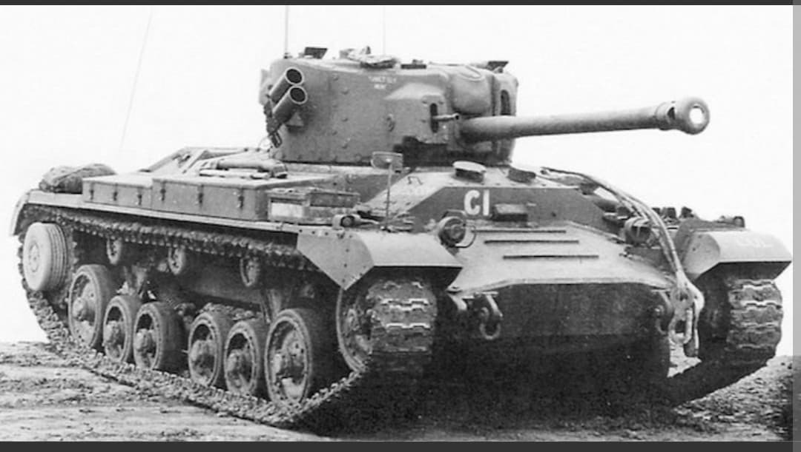
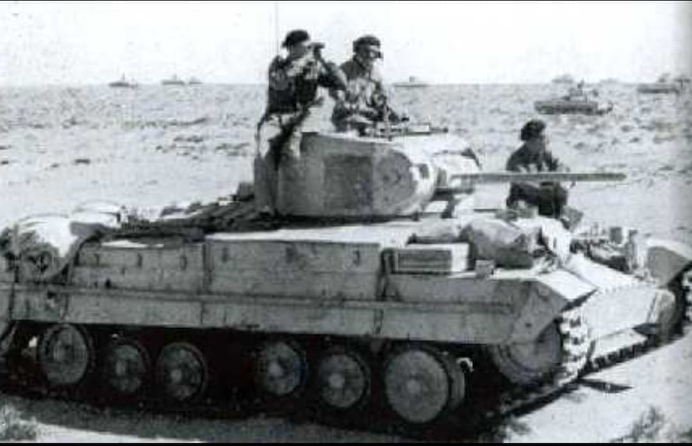
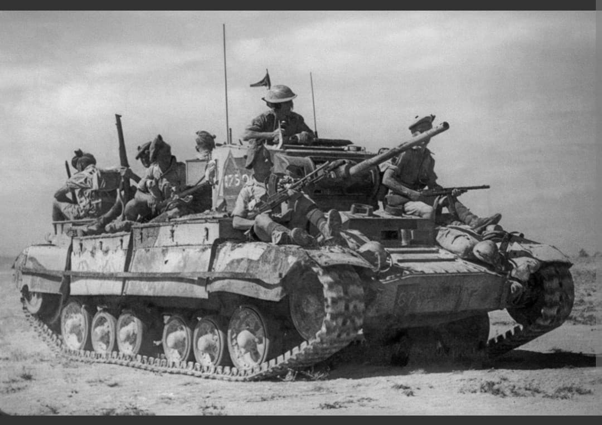

Le char britannique le plus produit de la guerre, réputé pour sa grande fiabilité mécanique

Le **Valentine** (officiellement Infantry Tank Mark III) est un char d'infanterie britannique développé à la fin des années 1930 par la firme Vickers-Armstrongs.
Conçu sur la base du char de croisière A10, le Valentine combinait un blindage robuste à une fiabilité mécanique exceptionnelle. Il devint le char d'origine britannique le plus produit de la Seconde Guerre mondiale, servant sur quasiment tous les théâtres d'opérations alliés.
Présenté au Ministère de la Guerre le 14 février 1938 (jour de la Saint-Valentin, origine probable de son nom), le véhicule d'environ **16 à 17 tonnes** se distinguait par sa taille compacte et sa facilité de production industrielle.
Propulsé par un moteur essence AEC ou des moteurs diesel AEC/GMC (130 à 165 chevaux), le Valentine atteignait une vitesse modérée de **24 km/h sur route**. Son blindage frontal atteignait **65 mm**. D'abord armé du canon **QF 2-pounder (40 mm)**, ses versions ultérieures intégrèrent un canon plus puissant de **6-pounder (57 mm)** puis de **75 mm**.

Le Valentine fit ses débuts opérationnels majeurs en Afrique du Nord lors de l'**Opération Crusader** en novembre 1941, où il remplaça progressivement le Matilda II. Apprécié pour son endurance dans les conditions désertiques extrêmes, il équipa une grande partie des unités blindées britanniques et du Commonwealth.
Près de **45 % de la production totale** de Valentine fut livrée à l'Armée rouge via le programme Prêt-Bail. Les équipages soviétiques l'appréciaient pour sa fiabilité, sa discrétion et son moteur diesel performant durant les hivers russes.

Produit à **8 275 exemplaires** entre 1940 et 1944 (dont 1 420 fabriqués au Canada), le Valentine servit de châssis pour de nombreuses variantes spécialisées.
Son châssis servit notamment de base au chasseur de chars **Archer** (armé du redoutable canon de 17 livres tirant vers l'arrière), au canon automoteur **Bishop**, ainsi qu'à des versions poseurs de ponts (*Valentine Bridgelayer*) et amphibies (*Valentine DD*).
Page du Musée HOP WW2 – Section Véhicules Terrestres Britanniques